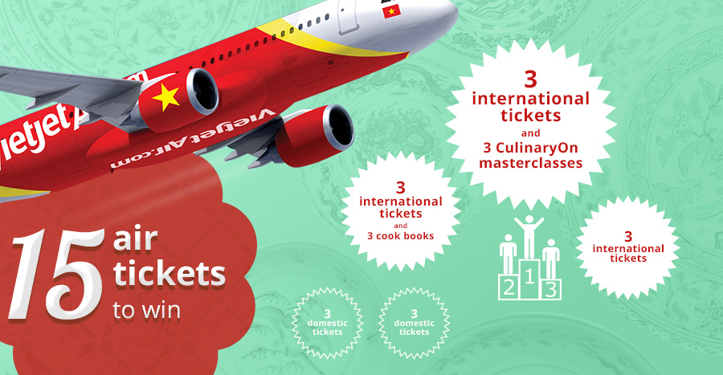

Competition Overview
What is FookUp?
FookUp is the first-of-its-kind cooking contest for Vietnamese community in Singapore. The event aims to provide a playground for not only Vietnamese but also local and international friends to connect and learn more about our homeland cuisine.
No cooking/ingredients preparation is needed. We'll prepare all the needed ingredients/utensils.
FookUp Season 3
Last year, FookUp 2015 received active involvement and support from the community and media. More than 9,000 people have been reached out to through our website, Facebook page and emails, etc. We started off the competition with a online marathon round, in which 15 teams (45 people) participated and thereafter selected 6 teams for the finale. The finale was fully packed with close to 100 people attending including finalist teams and audience. This year our theme would be "Mom’s Cook Food".
After that huge success, FookUp makes a comeback this year. With the new organising team, FookUp 2016 promises to bring to you new exciting experiences.
Important Dates
Registration: Sunday, September 18, 2016 - Sunday, October 2, 2016
Online Marathon: Sunday, October 9, 2016 - Sunday, October 16, 2016
Restaurant Simulation: Saturday, October 22, 2016
Grand Finale: Saturday, October 29, 2016
Prizes
-
1st Prize 3 Vietjet Air International Return Tickets* + 3 tickets to CulinaryOn Open Masterclasses^ (worth $168 each)
-
2nd Prize 3 Vietjet Air International Return Tickets* + 3 Cook Books (worth $30 each)
-
3rd Prize 3 Vietjet Air International Return Tickets*
-
4th Prize 3 Vietjet Local Return Tickets*
-
5th Prize 3 Vietjet Local Return Tickets*

*Vietjet Air Ticket Terms & Conditions:
- Customer should contact authorised ticketing offices of Vietjet to request ticket 7 days prior to departure. For detailed address, kindly visit vietjetair.com, tab "Where to buy tickets" or contact hotline +84 1900 1886 (Vietnam)
- Available routes:
- International: any international flights operated by Vietjet
- Domestic: any domestic flights operated by Vietjet
- Ticket includes free 20kg checked baggage
- Ticket does not include taxes, charge and other service fees
- Ticket is not refundable
- Flight change/date change is permitted (change fee is applicable)
- Name change/reroute is not permitted
- Ticket is not applicable during these holiday periods: +/- 3 days for Hung Vuong Annisersary, 30/4, 1/5, 2/9, 1/1, and +/- 7 days for Lunar New Year (from the first day)
- Ticket is valid for 1 year (exact date will be given in the actual voucher)
^CulinaryOn Open Masterclasses Terms & Conditions:
- This ticket is valid for three (3) months, till the end of (date to be confirmed) and entitles you to one seat at our Aperitivo and Pasta show
- Allocation of seats at our Aperitivo and Pasta shows are on a first-come-first-served basis and winners should reserve their seats at least two (2) weeks in advance
- This ticket is not exchangeable for cash or any other monetary items
Why FookUp?
FookUp is unique because it focuses on creativity and fun aspect of cooking. All rounds of the competition are built such that the team with fun and creative mindset will win. Participants are not required to have excellent cooking skills.
Each team will need 3 members to register. Registration ends on Sunday, October 2, 2016 midnight.
What do I need to do now?
- Register as a team of 3
- Participate in Online Marathon
- If you are selected, join our Restaurant Simulation on October 22, 2016
Register Your Team Now!
Competition Format
FookUp 2016 will consist of 3 rounds: Online Marathon, Restaurant Simulation and Grand Finale. 8 teams with the highest scores in Online Marathon Round will proceed to the Restautant Simulation Challenge to cook one in an 8-dish tasting menu to serve 10 VIP guests. The Grand Finale will showcase the top 5 teams’ food knowledge as well as cooking techniques through a series of fun games and cook-off challenges.
Registration
- Registration closes on Sunday, October 2, 2016, 23:59. Participants will join in teams of three (3) strictly.
- By registering for the FookUp 2016 Competition, participants indicate that they are available for all the dates listed in the above schedule.
- Team composition and eligibility:
- The competition is open to all Vietnamese without any limitation to age, gender, education or occupation, etc. All that participants need is a creative and open mind to take up the fun as well as the challenges, to make friends and to "go art" with the food
- Participants are not required to be excellent in cooking techniques. It would be sufficient for participants to be equipped with the basic cooking skills such as boiling egg or cooking rice. It is the utmost importance that participants possess CREATIVITY and PASSION in food
- Should there are changes to the team members, teams must notify the organizers early to assess on a case-by-case basis
- Every team to register at https://goo.gl/forms/4DmOoe9DqJprNGv73. Teams will be notified via email that the registration is successful.
Online Marathon
- Online Marathon comprises 2 elements:
- Team introduction video: 60%
- 1 mini-test: 40%
- Team introduction video is a fun and interactive way to tell the team's stories and connect them with the audience.
- Participating teams are to send their videos (1 minute) to FookUp at fookup@vietnam2020.org
- Organising team will upload all the team introduction videos on Facebook as soon as the team submits their video.
- Each video will be judged based on a set of guidelines by the organiser (see below).
- The video should provide a comprehensive introduction about the team and the reasons why they want to participate in FookUp. It will be judged based on the content quality, creativity and clarity (high resolution and clear sound).
- Popularity (number of likes and shares) will also be a part of the judging criteria. It is advisable that teams submit their video as early as possible to attract more interaction with the audience.
- All videos must be submitted before Sunday, October 9, 2016, 23:59.
Watch a demo
- The mini-test will allow teams to compete on speed and accurate understanding of food and cooking.
- The mini-test will be released on Sunday, October 16, 2016, 20:00.
- For each mini-test, a list of questions will be released to each team via email. Further instruction will be given prior to the tests.
- Teams will have 2 hours from the releasing time (20:00 - 22:00) to work on the quiz and submit the answers via website
- The results will be evaluated based on speed and accuracy. Time is considered as the time the organizers receive the answers
- Teams are allowed to make changes to the answers they have already submitted. Scoring will be based on the latest timestamp and answers.
- Teams will be notified via email that their submission is successful. If teams do not receive such email within 30 minutes after their submission, please promptly notify the organisers.
- Late submission after 2 hours from the releasing time will not be considered.
- After the mini-test, organisers will announce the score of every team.
- Up to 8 teams will be selected to advance to the Restaurant Simulation. The result will be announced before Saturday, October 22, 2016.
Restaurant Simulation
- Venue: Orange Lantern Noodle Bar 460 Alexandra Rd, 02-19 Alexandra Retail Centre, 119963
- Time: Saturday, October 22, 2016, 14:00 - 17:30
- This round will test the teams' abilities on budget planning, cooking techniques and flavor combination:
- Each team will receive a budget of SGD 50 to shop for ingredients for one course in an 8-course tasting menu to 10 VIP guests.
- The order of each course will be allocated randomly by lot-drawing.
- Teams will have 1 hour 45 minutes to complete shopping and cooking their dish.
- Teams will be judged based on creativity and deliciousness of the food by the 10 VIP guests.
- The top 5 teams will proceed to the Grand Finale.
Grand Finale
- Venue: 222 Queen Street #01-01/02, 188550
- Time: Saturday, October 29, 2016, 14:00 - 17:00
- Semi-final round will consist of a small fun challenge
- 5 teams will be tested on cooking knowledge and team work throughout the challenge
- Winners are decided by the accumulated points of all the activities involved
- The top 3 teams will proceed to the Final at the same venue after the semi-final round
- Final round is the grand cook-off event
- The top 3 teams will compete to showcase cooking skills in creating a meal inspired by family meals
- Ingredients and cooking utensils will be provided by organisers to ensure fairness among teams
- All dishes will be evaluated by a panel of judges based on various criteria to decide the champion
Competition Gallery